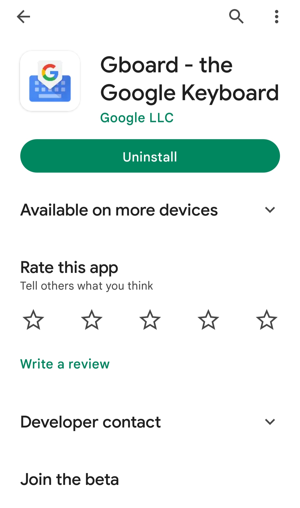
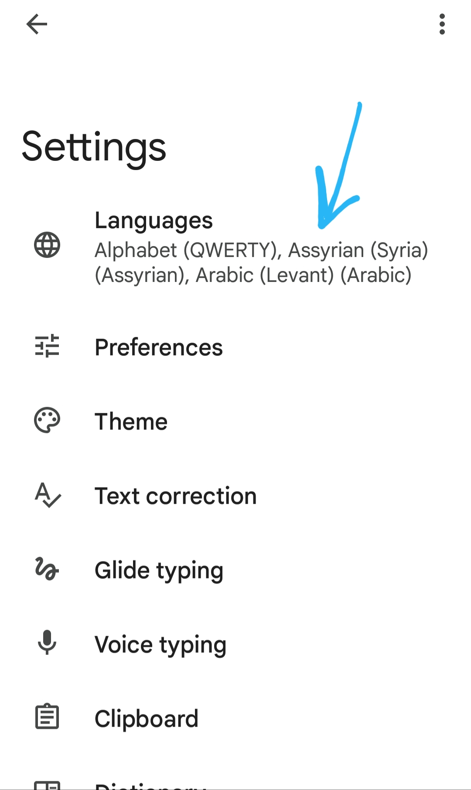
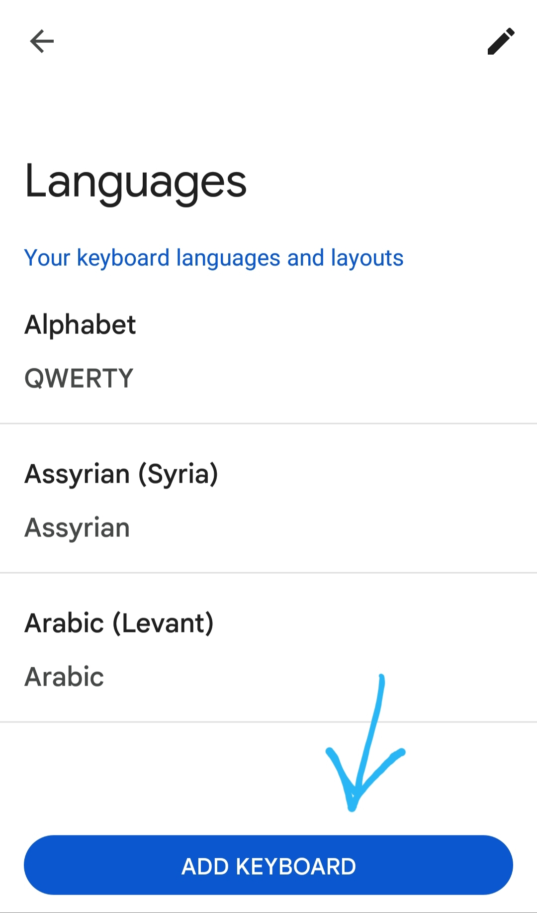
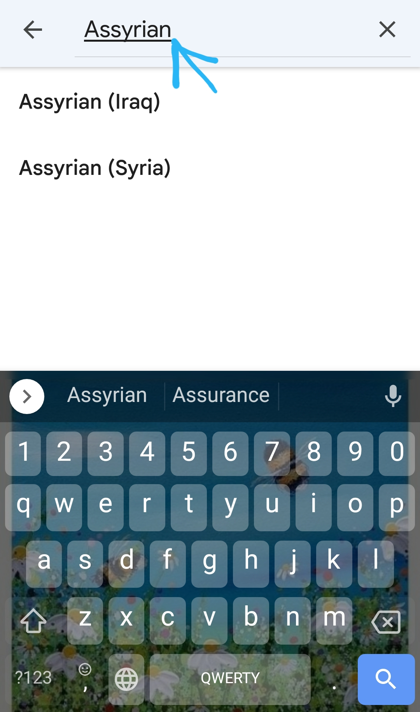
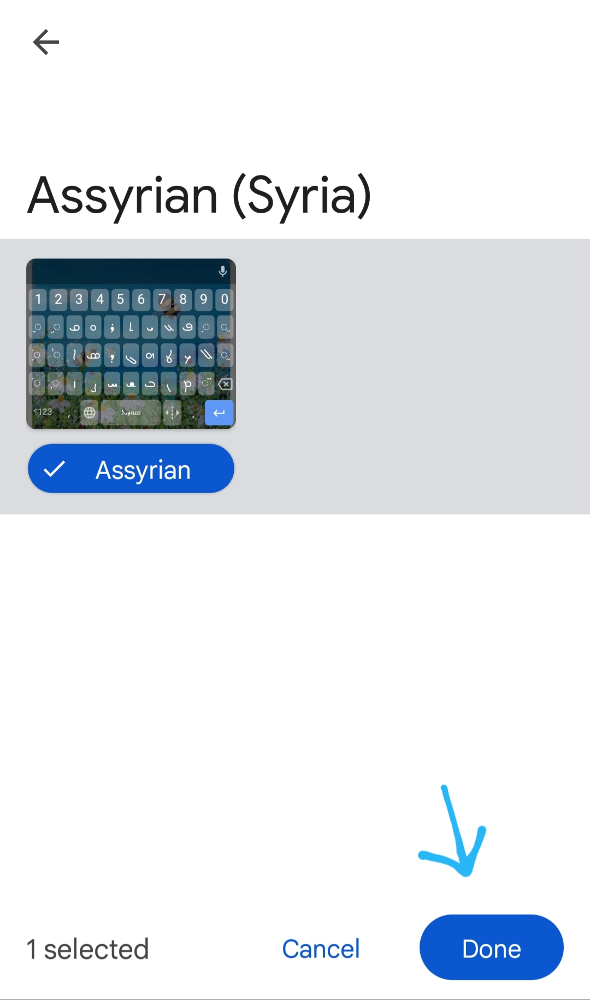
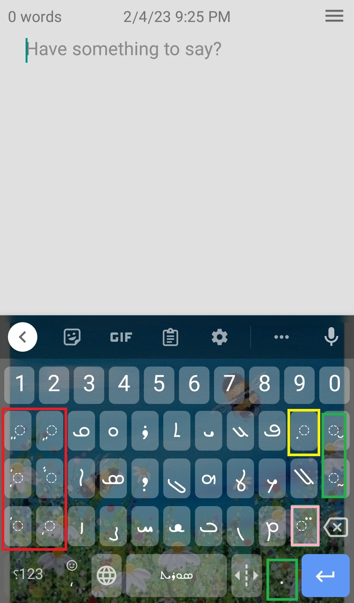
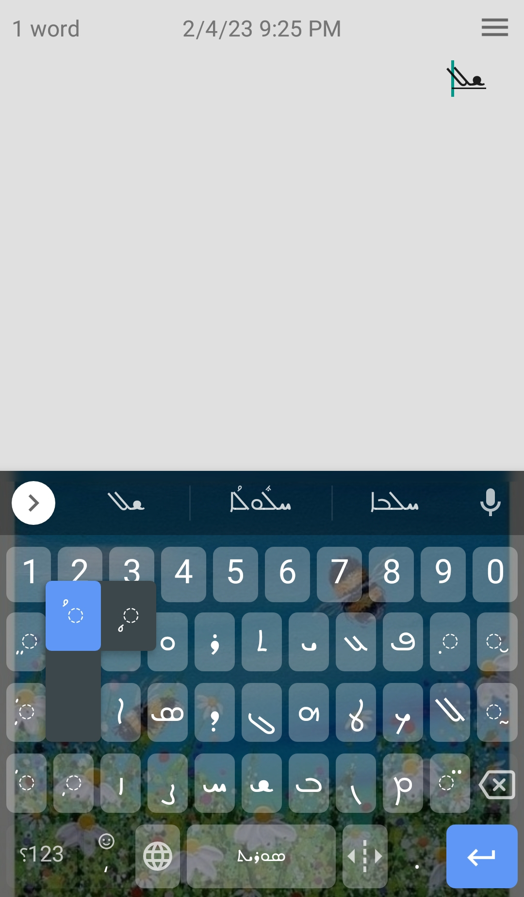
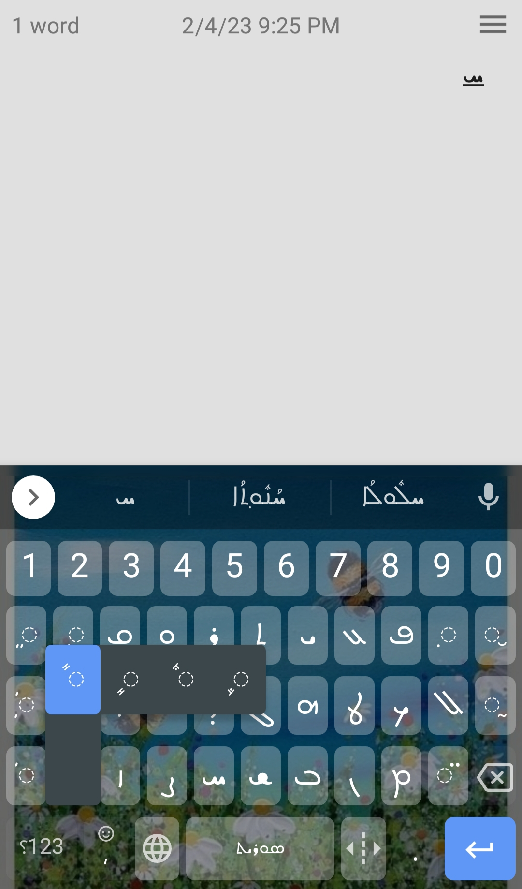
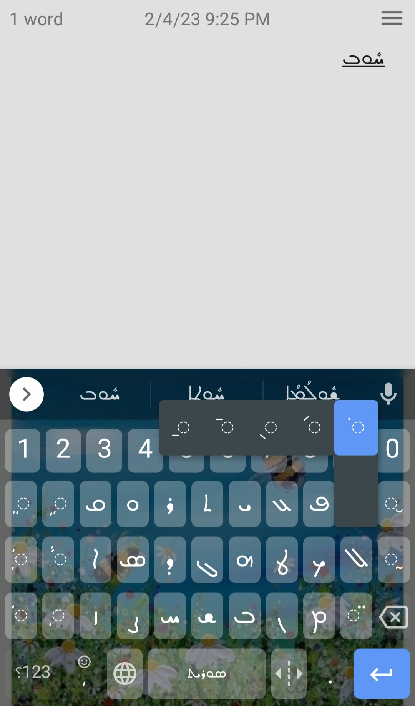

ملاحظة : اضغطوا على كلمة Yilaf أعلاه للعودة إلى الصفحة الرئيسية
قبل البدء باستخدام تطبيق ييلاف يجب أن تقوموا بتثبيت لوحة مفاتيح (كيبورد) تدعم اللغة السريانية للهاتف (بالنسبة للكمبيوتر فلكل نظام تشغيل أسلوبه الخاصة و لكن بالعموم الطرق سهلة و متوفرة على الإنترنت)
و يوجد على متجري بلاي ستور (للآندرويد) و الـ آب ستور (لأجهزة الـ iOS أو الآيفون) العديد من لوحات المفاتيح
و لعل من أشهرها تطبيق Gboard الذي يمكن تحميل من المتجرين بالبحث عن اسمه و تثبيته مباشرة كما في الصورة

ثم عند فتح التطبيق نذهب إلى الخيار الأول كما في الصورة (في حال كانت لغة الهاتف العربية أو لغة أخرى غير الإنكليزية فستظهر الخيارات بلغة الجهاز
و لكن ترتيب الخيارات هو ذاته لذا يكفي تتبع الضغط على نفس ترتيب الخطوات كما في الصور)

ثم نقوم بإضافة لوحة مفاتيح جديدة

ثم يمكننا البحث من القائمة عن إحدى اللوحات التي تدعم السرياني أو يمكن استخدام البحث في مربع البحث أعلى الخيارات
كما هو موضح في الصورة , و هنا نلاحظ أن هناك العديد من لوحات المفاتيح التي يمكن إضافتها
و يجب البحث بلغة الجهاز فلو لغة الجهاز إنكليزية يمكن أن نكتب Assyrian أو Classical Syriac
و لو اللغة عربية نبحث عن الآشورية أو السريانية الكلاسيكية , و هناك غيرهما مثل الكلدانية , و لكن أنا شخصياً و من تجربتي
رأيت عن اللوحة الآشورية هي الأشمل و الأسهل

ثم نختار الآشورية (السورية أو العراقية) أنا شخصياً اخترت السورية و طبعاً الفروقات غالباً في توضع الأحرف على اللوحة ولا فروقات جوهرية
ثم نضيف اللوحة كما في الصورة

الآن يمكننا الكتابة باللغة السريانية , لاحظوا الحروف الموجودة ضمن اللوحة , و كذلك انتبهوا للأزرار التي وضعتها ضمن مستطيل أحمر

هذه الأزرار هي الحركات أو التشكيل , و كون اللوحة التي استخدمناها هي الآشورية فالأزرار تحوي الحركات السريانية الشرقية
و بما أننا نستخدم السريانية الغربية في تعلمنا فلكي نستخدم حركاتها يجب أن نضغط باستمرار لفترة قصيرة على الحركات الشرقية كي نجد مقابلاتها الغربية كما في الصورة


حاولوا استكشاف الحركات و التي ستجدونها في الدرس الأول من الوحدة الأولى
أما المستطيل الأصفر يحوي على نقطة التليين (و تمثل الزر الأساسي أي بدون الحاجة للضغط مطولاً) و نقطة التقسية و النقطة التي تمثل الزر الأول بعد الضغط المستمر
أما الزر الأخير في خانة المتسطيل الأصفر هو الخط أسفل الحرف الذي يعني أن الحرف غير ملفوظ , كما في الصورة

أما المستطيل الزهري فهو يمثل نقطتا الجمع و توضعان على الكلمات المجموعة
و أخيراً المستطيلات الخضراء لا تلعب أهمية كبيرة في تعلمنا حالياً و هي تمثل علامات الترقيم و علامات أخرى خاصة بالكتابة السريانية و التي لن نحتاج إليها الآن
و أخيراً كي تعتادوا على الكتابة على لوحة المفاتيح على الهاتف إليكم المربع النصي الآتي , حاولوا كتابة النص الموجود في الأسفل (لا يهم الآن معرفة قراءة و نطق ومعنى النص)
بل المهم الاعتياد على الكتابة باستخدام لوحة المفاتيح , و طبعاً يمكنكم القيام بنفس التمرين باستخدام ورقة و قلم كي تعتادوا الكتابة باليد
إليكم النص :
ܫܠܳܡܳܐ ܚܰܒܪ̈ܝ ، ܐܰܝܟܰܢܳܐ ܐܺܝܬ݂ܰܝܟܽܘܢ ؟ ܣܳܒܰܪ ܐ̱ܢܳܐ ܕܺܐܝܬ̣ܰܝܟܽܘܢ ܒܚܽܘܠܡܳܢܳܐ ، ܬܰܘ ܥܰܡܝ̱ ܕܢܺܐܠܰܦ̣ ܠܶܫܳܢܳܐ
ܣܽܘܪܝܳܝܳܐ
تدربوا على الكتابة في هذا المربع النصي